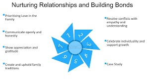

Prioritizing Quality Sleep
In the demanding life of a student, sleep is often sacrificed. However, consistent and sufficient sleep is foundational for both mental and academic performance. Aim for 7-9 hours of quality sleep each night to allow your brain to consolidate information, improve focus, and regulate your mood.
- Establish a Regular Sleep Schedule: Go to bed and wake up at consistent times, even on weekends.
- Create a Relaxing Bedtime Routine: Wind down with activities like reading or a warm bath, avoiding screens before bed.
- Optimize Your Sleep Environment: Ensure your bedroom is dark, quiet, and cool for optimal sleep.
Adequate sleep leads to improved concentration, better memory retention, and enhanced problem-solving skills.
Fueling Your Brain with Nutritious Food
The food you eat directly impacts your brain function and energy levels. A balanced diet rich in whole foods provides the necessary nutrients for optimal cognitive performance.
- Eat Regular, Balanced Meals: Don't skip meals, and ensure they include a mix of fruits, vegetables, whole grains, and lean protein.
- Stay Hydrated: Drink plenty of water throughout the day to maintain focus and energy levels.
- Limit Processed Foods and Sugary Drinks: These can lead to energy crashes and negatively affect concentration.
Nourishing your body with healthy foods supports better concentration, memory, and overall well-being.
The Benefits of Regular Physical Activity
Exercise is not just for physical health; it significantly boosts mental health by reducing stress, improving mood, and enhancing cognitive function.
- Find Enjoyable Activities: Choose activities you like, whether it's sports, dancing, or walking.
- Aim for Daily Movement: Try to incorporate at least 30 minutes of physical activity into your daily routine.
Regular exercise improves focus, reduces anxiety, and increases overall energy levels.
Practicing Mindfulness and Stress Management
Student life can be stressful. Developing mindfulness practices can help manage stress, improve focus, and enhance emotional well-being.
- Incorporate Deep Breathing Exercises: Practice simple breathing techniques to calm your mind.
- Try Meditation or Mindfulness Apps: Even a few minutes daily can help reduce stress.
- Engage in Relaxing Hobbies: Make time for activities you enjoy to unwind and recharge.
Mindfulness practices can lead to reduced stress, improved concentration, and a greater sense of calm.
Developing Effective Study Strategies
Efficient study habits can significantly reduce stress and improve academic outcomes, contributing to better mental health.
- Create a Study Schedule: Plan your study time and stick to it.
- Find a Dedicated Study Space: Choose a quiet place free from distractions.
- Practice Active Learning: Engage with the material actively by summarizing and questioning.
- Take Regular Breaks: Short breaks can improve focus and prevent burnout.
Effective study habits lead to better understanding, improved grades, and reduced academic stress.
Nurturing Social Relationships
Strong social connections provide support and a sense of belonging, which are crucial for mental well-being.
- Make Time for Friends and Family: Nurture your relationships with loved ones.
- Engage in Social Activities: Participate in clubs, groups, or social events.
- Communicate Openly: Share your thoughts and feelings with trusted individuals.
Strong social connections contribute to increased happiness and better coping mechanisms for stress.